Universidad de Guanajuato · Maestría en Ciencias Aplicadas
Materia: Fundamentos de Ingeniería de Polímeros | Docente: Dr. Julio César Armas Pérez | Alumno: Miguel Alejandro Díaz Gaytán
Materia: Fundamentos de Ingeniería de Polímeros | Docente: Dr. Julio César Armas Pérez | Alumno: Miguel Alejandro Díaz Gaytán
Esquema rector que vincula la Química, el Tamaño molecular, la Forma y la Estructura con las propiedades mecánicas y térmicas bajo servicio industrial.
Naturaleza de la unidad repetitiva (mero), grupos funcionales reactivos, densidad de energía cohesiva y mecanismos de polimerización.
Alquenos vinílicos (C=C), ésteres, amidas con puentes de hidrógeno (Ecoh > 30 kJ/mol) y anillos aromáticos que elevan la rigidez.
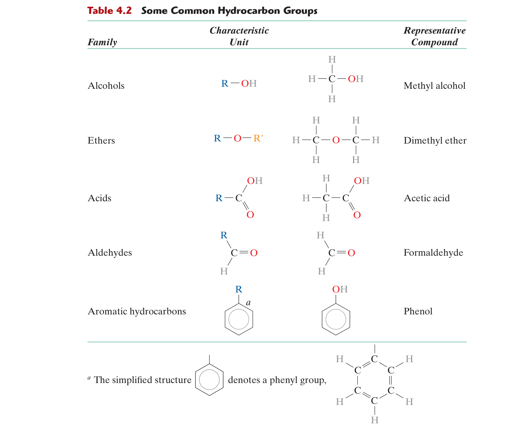
Polimerización por adición con centros y sitios activos radicalarios vs. Policondensación por pasos con remoción de agua.
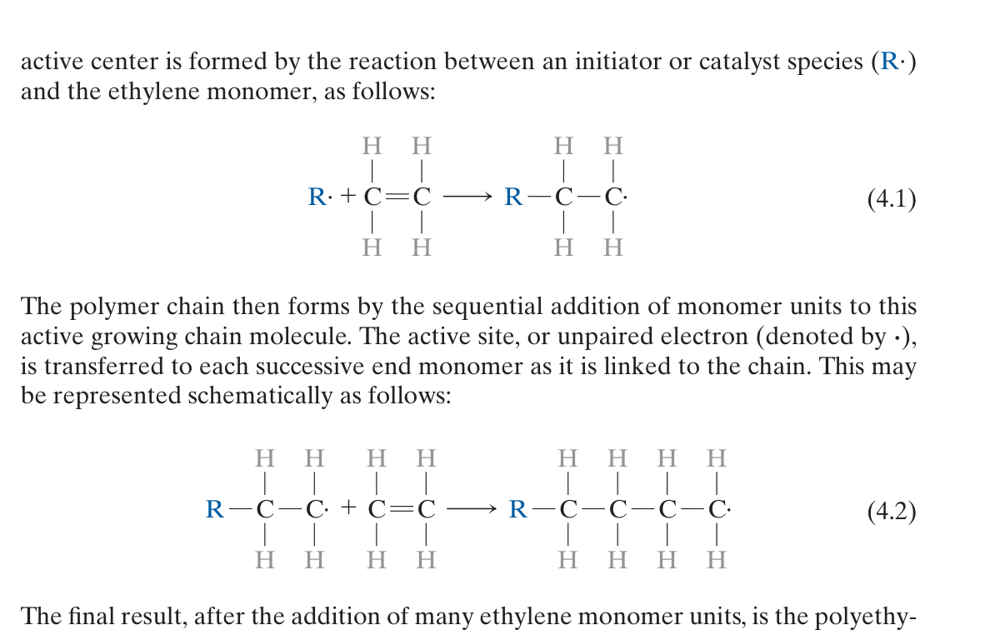
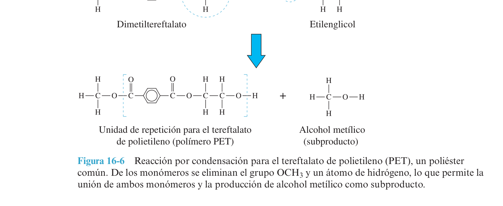
Plastificantes (separación de cadenas y descenso de Tg), cargas minerales (CaCO3, talco), antioxidantes térmicos y estabilizadores UV (HALS).
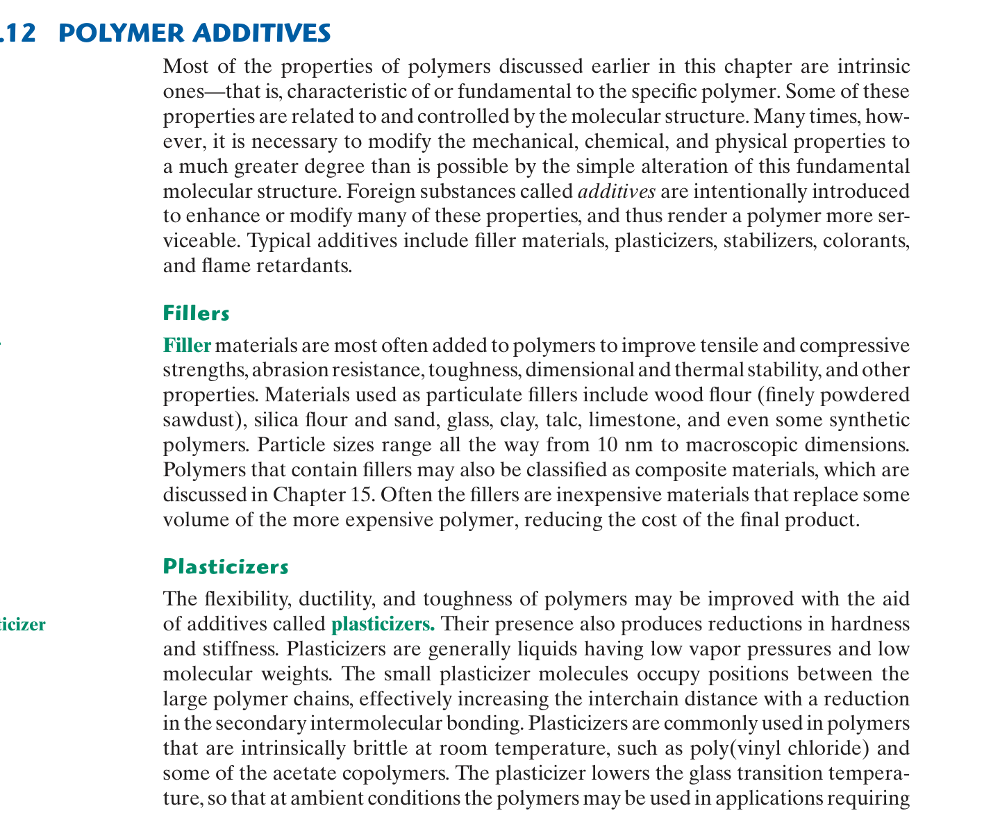
Masa molecular promedio, longitud de cadena, Grado de Polimerización y distribución polidispersa.
Número medio de meros eslabonados. Copolímeros: m0 = Σ fj mj. Umbral crítico (DP > 100–200) para entrelazamientos mecánicos estables.
Promedio en número (Mn) y promedio en peso (Mw). Índice de polidispersidad PDI = Mw / Mn (amplitud de distribución).
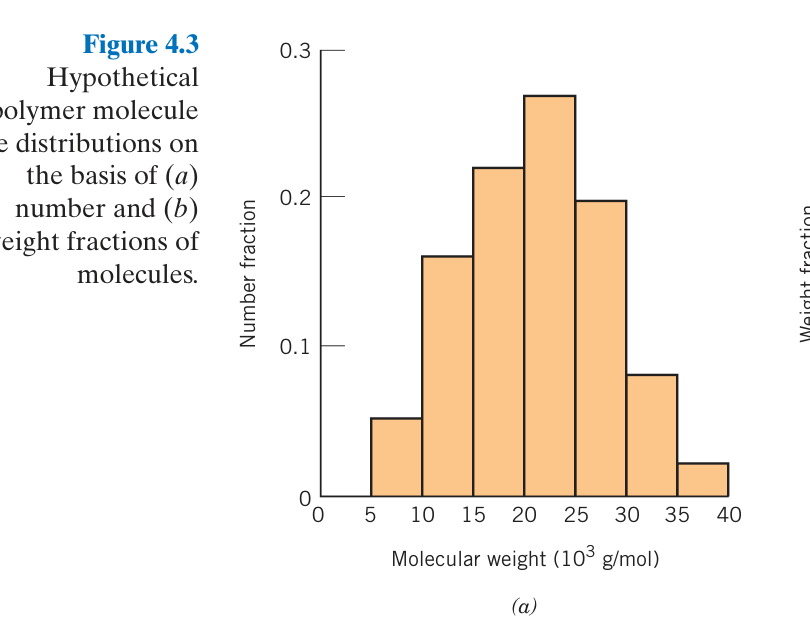
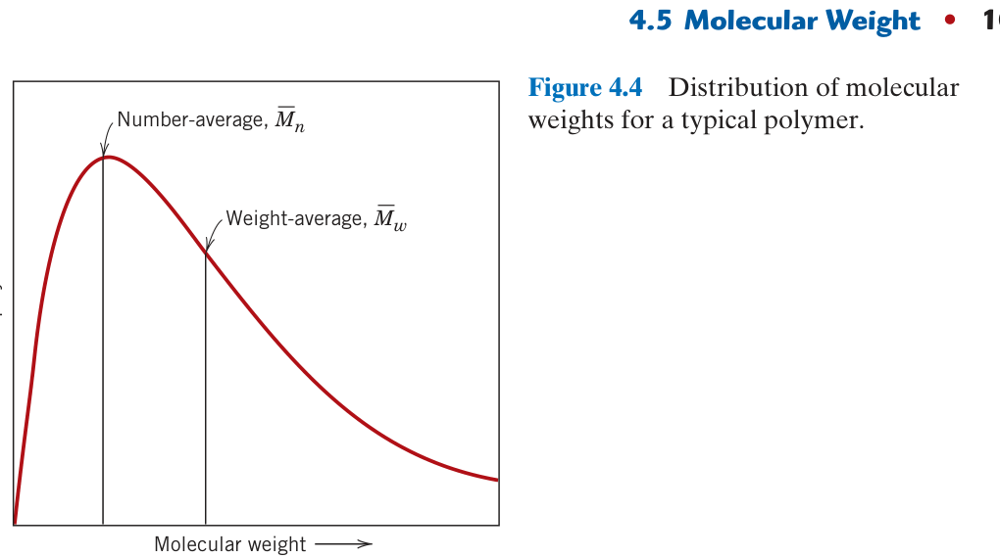
Bajo (< 104), Medio (104–105, inyección) y Ultra-alto (> 106, UHMWPE). Ecuación de Fox-Flory y ley reológica en fundido.
Arreglos espaciales adoptados exclusivamente por rotación térmica en torno a enlaces sencillos carbono-carbono (σ) sin rotura química.
Giro torsional en torno al ángulo tetraédrico de 109.5°. Sustituyentes voluminosos imponen barreras estéricas que elevan la Tg.
Modelo de ovillo estadístico (random coil). La distancia cuadrática media extremo a extremo escala con ⟨r2⟩1/2 = l · √N · f(θ).
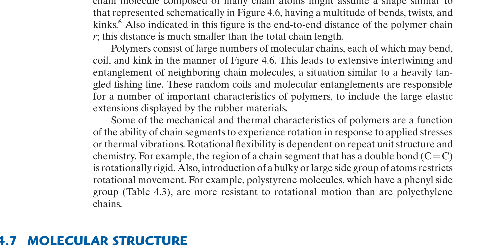
Desenredo y alineación paralela de ovillos durante el estiramiento y soplado industrial, triplicando la tenacidad tensil direccional.
Las 4 arquitecturas moleculares fundamentales: lineal, ramificada, entrecruzada y en red tridimensional continua.
HDPE, PVC, Nylon. Cadenas independientes unidas por Van der Waals; fusibles y reciclables.
LDPE. Ramas secundarias que reducen la densidad, el empaquetamiento y la cristalinidad.
Gomas vulcanizadas. Enlaces covalentes cruzados de azufre entre cadenas; comportamiento elastomérico.
Resinas epoxi y baquelita. Monómeros trifuncionales en 3D; punto de gel (Mw ⟶ ∞) e infusibles.
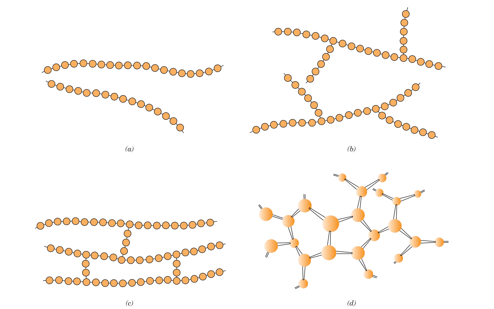
Disposición espacial fija en la cadena que solo puede modificarse mediante la ruptura y recombinación de enlaces covalentes primarios.
Orientación de los grupos laterales R respecto al plano macromolecular principal.
Grupos R del mismo lado; alta cristalinidad (Tm = 165 °C).
Grupos R alternados de forma estrictamente regular.
Grupos R caóticos; 100% amorfo, pasta gomosa sin valor mecánico.
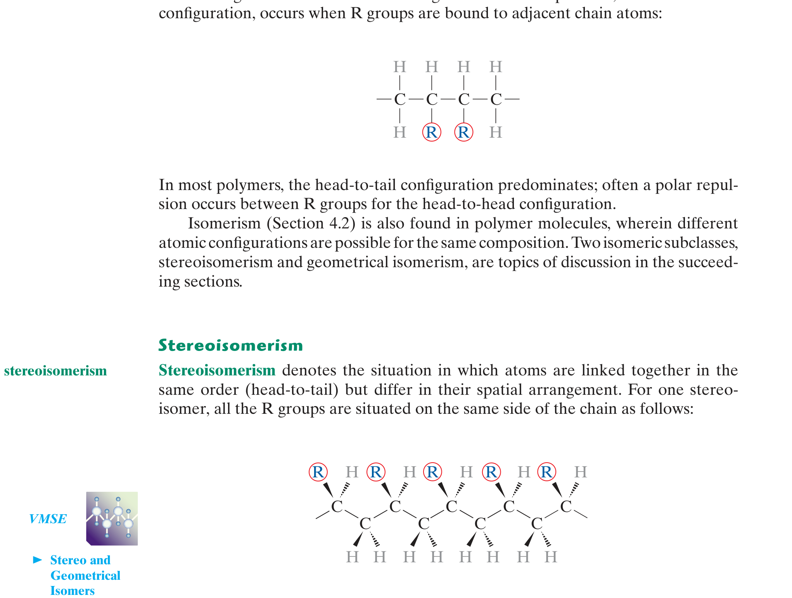
Presencia de dobles enlaces C=C rígidos en monómeros dieno con impedimento de rotación.
Cadena replegada, impide cristales; elastómero elástico (Tg = −70 °C).
Cadena lineal extendida, altamente cristalina y rígida a 25 °C.
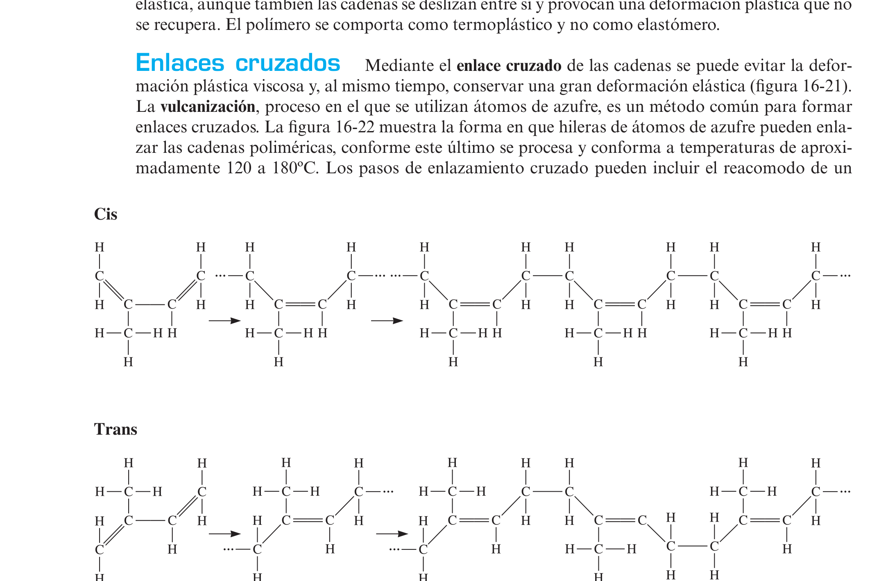
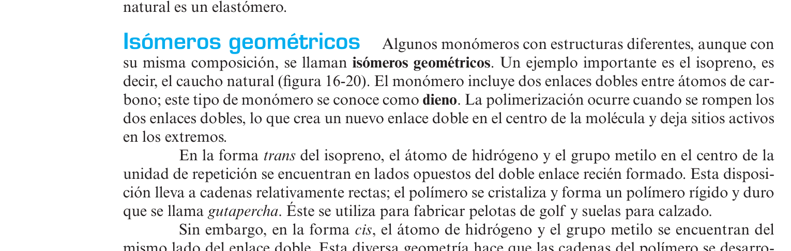
Teoría del volumen libre (2.5% crítico en Tg), congelamiento segmentario cooperativo y ausencia de Tm en redes covalentes (Tserv < Tg < Td).
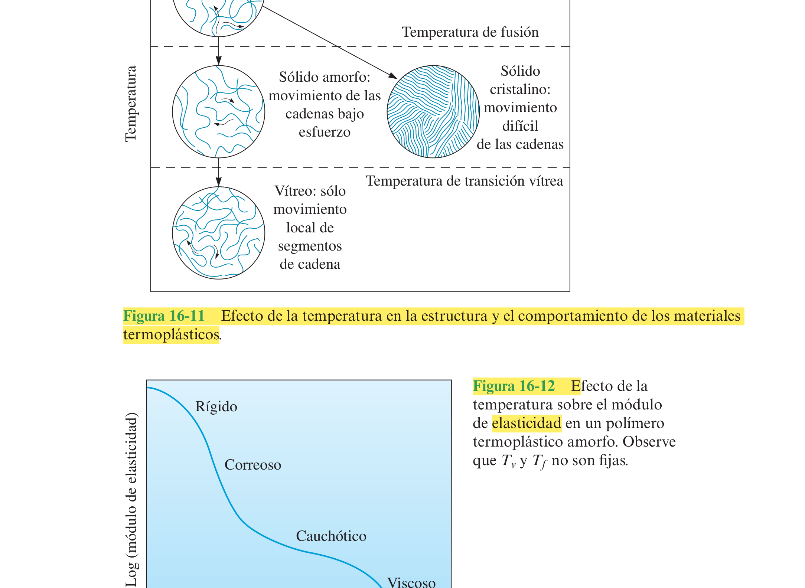
Energía libre ΔGm = ΔHm − T ΔSm. Criterio de Hildebrand: |δpol − δsolv| ⟶ 0. Disolución en lineales vs. Hinchamiento elástico de Flory-Rehner en redes.
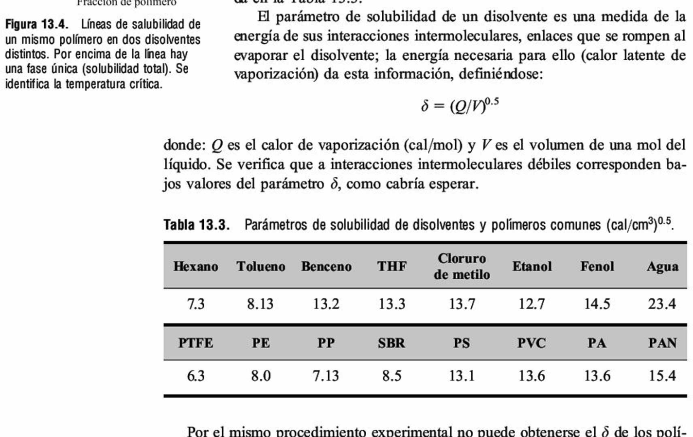
Flujo pseudoplástico no newtoniano (shear thinning con τ = K · γ̇n, n < 1). Extrusión de tornillo y moldeo por inyección a alta presión.
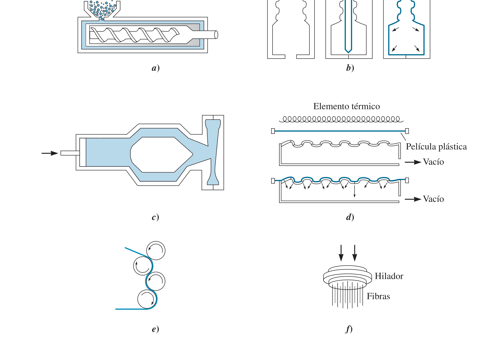
Comparativa sistemática entre Termoplásticos, Termofijos y Elastómeros en cuanto a tipo de enlace, ductilidad mecánica y capacidad de reprocesamiento por fusión.
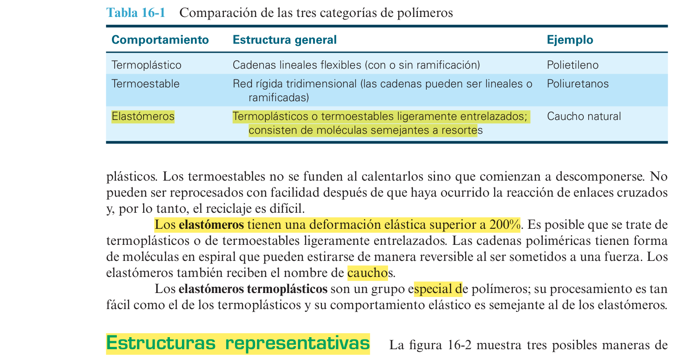